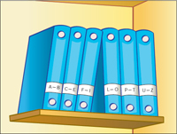

Hacer click en cada pestaña para ver detalle:
COMPETENCIA

RESUELVE PROBLEMAS DE GESTIÓN DE DATOS E INCERTIDUMBRE
CAPACIDADES
CAPACIDADES:.
- Representa datos con gráficos y medidas estadísticas o probabilísticas.
- Comunica la comprensión de los conceptos estadísticos y probabilísticos.
- Usa estrategias y procedimientos para recopilar y procesar datos.
- Sustenta conclusiones o decisiones con base en información obtenida.
CAMPOS TEMÁTICOS
CAMPOS TEMÁTICOS:.
- Experimento aleatorio. Espacio muestral. Sucesos. Operaciones.
- Situación aleatoria considerando condiciones y restricciones.
- Frecuencia de sucesos.
- Probabilidad de eventos independientes y dependientes.
CONCEPTOS CLAVE

CONCEPTOS CLAVE:.
- Espacio muestral
- Suceso
- Experimento aleatorio
- Probabilidad